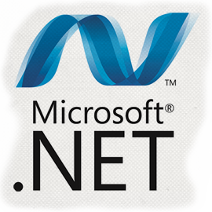

Perl, JSON y Tecnologias .NET
Perl 
Perl es un lenguaje de programación diseñado por Larry Wall en 1987.
Perl toma caracteristicas del lenguaje C y en un grado inferior de muchos otros lenguajes de programación.
Estructuralmete esta basado en lenguaje de bloques como los C. Fue ampliamente adoptado por su destreza en el procesado de texto y por no tener ninguna de las limitaciones de otros lenguajes script.
Perl es diseñado para hacer un uso eficiente de los costosos programadores de ordenador.
Perl tiene caracteristicas que soportan una variedad de paradigmas de programacion
Es software libre y esta licenciado bajo la licencia artística y la GNU. Existen dIstrinstituciones disponibles para la mayoría de sistemas operativos, incluso para Mac.
JSON
JSON (JavaScript Object Notation - Notación de Objetos de JavaScript) es un formato ligero de intercambio de datos.
Está basado en un subconjunto del Lenguaje de Programación JavaScript, Standard ECMA-262 3rd Edition - Diciembre 1999.
JSON es un formato de texto que es completamente independiente del lenguaje pero utiliza convenciones que son ampliamente conocidos por los programadores de la familia de lenguajes C, incluyendo C, C++, C#, Java, JavaScript, Perl, Python, y muchos otros. Estas propiedades hacen que JSON sea un lenguaje ideal para el intercambio de datos.
JSON está constituido por dos estructuras:
*Una colección de pares de nombre/valor. En varios lenguajes esto es conocido como un objeto, registro, estructura, diccionario, tabla hash, lista de claves o un arreglo asociativo.
*Una lista ordenada de valores. En la mayoría de los lenguajes, esto se implementa como arreglos, vectores, listas o secuencias.
Una de las ventajas de JSON sobre XML como formato de intercambio de datos en este contexto es que es mucho más sencillo escribir un analizador sintáctico (parser) de JSON.
Cada vez hay más soporte de JSON mediante el uso de paquetes escritos por terceras partes. La lista de lenguajes soportados incluye ActionScript, C, C++, C#, ColdFusion, Common Lisp, Delphi, E, Eiffel, Java, JavaScript, ML, Objective-C, Objective CAML, Perl, PHP, Python, Rebol, Ruby, Lua y Visual FoxPro.
En diciembre de 2005 Yahoo! comenzó a dar soporte opcional de JSON en algunos de sus servicios web.
Usos
Para muchos, es el compañero perfecto de Ajax. Al igual que XML, sirve para modelar y presentar datos, así que se puede combinar con todo tipo de aplicaciones como lectores RSS, Widgets de WordPress, Mods de Joomla, Gadgets y Badges en diferentes aplicaciones y servidores.
Comparación de JSON contra XML
XML goza de mayor soporte y ofrece muchas más herramientas de desarrollo (tanto en el lado del cliente como en el lado del servidor). Hay muchos analizadores JSON en el lado del servidor.
Licencia
Es de software libre siempre y cuando se dé referencia y el Software se utilice para el bien, no para el mal.

.NET es un framework de Microsoft que hace un énfasis en la transparencia de redes, con independencia de plataforma de hardware y que permita un rápido desarrollo de aplicaciones.
.NET podría considerarse una respuesta de Microsoft al creciente mercado de los negocios en entornos Web, como competencia a la plataforma Java de Oracle Corporation y a los diversos framework de desarrollo web basados en PHP. Su propuesta es ofrecer una manera rápida y económica, a la vez que segura y robusta, de desarrollar aplicaciones.
La plataforma .NET de Microsoft es un componente de software que puede ser añadido al sistema operativo Windows. .NET Framework se incluye en Windows Server 2008, Windows Server 2012, Windows Vista, Windows 7, Windows 8.
Soluciones:
Permite una integración más rápida y ágil entre empresas y un acceso más simple y universal a todo tipo de información desde cualquier tipo de dispositivo.
COMPONENTES Los principales componentes del marco de trabajo son:
1. El conjunto de lenguajes de programación.
2. La biblioteca de clases base o BCL.
3. El entorno común de ejecución para lenguajes, o CLR por sus siglas en inglés.
Debido a la publicación de la norma para la infraestructura común de lenguajes (CLI por sus siglas en inglés), el desarrollo de lenguajes se facilita, por lo que el marco de trabajo .NET soporta ya más de 20 lenguajes de programacion
Algunos de los lenguajes desarrollados para el marco de trabajo .NET son: C#, Visual Basic .NET, Delphi (Object Pascal), C++, F#, J#, Perl, Python, Fortran, Prolog (existen al menos dos implementaciones, el P#1 y el Prolog.NET2), Cobol y PowerBuilder.
Caracteristicas
Es el encargado de proveer lo que se llama código administrado, es decir, un entorno que provee servicios automáticos al código que se ejecuta. Los servicios son variados:
*Cargador de clases: permite cargar en memoria las clases.
*Compilador MSIL a nativo: transforma código intermedio de alto nivel independiente del hardware que lo ejecuta a código de máquina propio del dispositivo que lo ejecuta.
*Administrador de código: coordina toda la operación de los distintos subsistemas del Common Language Runtime.
*Recolector de basura: elimina de memoria objetos no utilizados automáticamente.
- Juan Chavez Nava
- Tanya Hernández Valdez
- Omar David Sandoval Sida